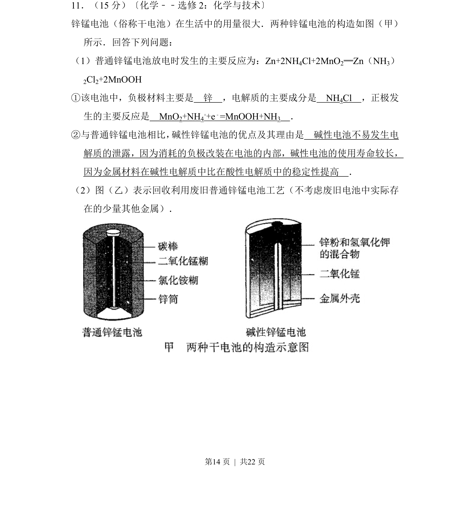
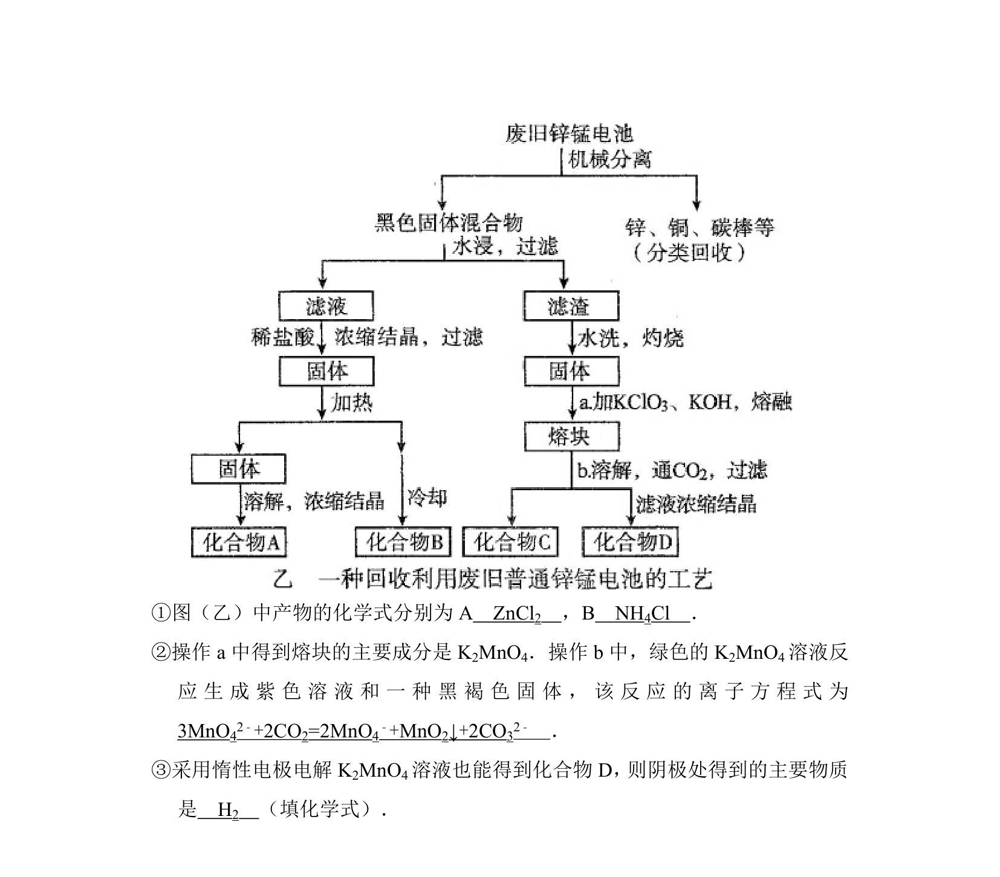
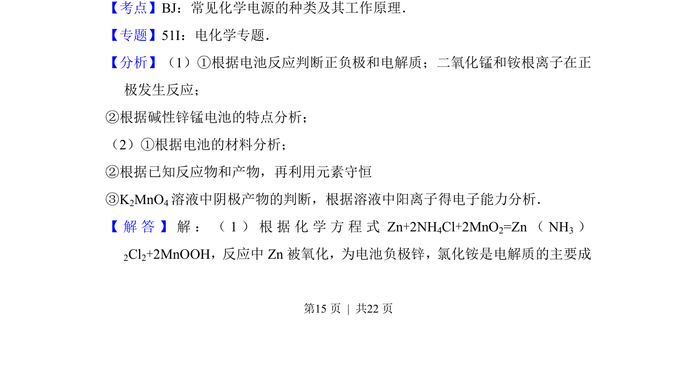
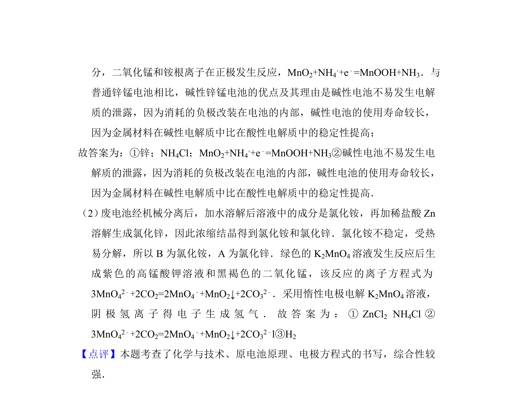

考点：原电池 电极反应 电解质 金属回收


原电池原理与废旧电池回收工艺，涉及电极反应书写及碱性电池优缺点比较。


📄 原 PDF 第 14 页：
素材/真题/吉林/2008-2024·（吉林）化学高考真题/2013年高考化学试卷（新课标Ⅱ）（解析卷）.pdf
11．（15分）〔化学﹣﹣选修2：化学与技术〕 锌锰电池（俗称干电池）在生活中的用量很大．两种锌锰电池的构造如图（甲） 所示．回答下列问题： （1）普通锌锰电池放电时发生的主要反应为：Zn+2NH4Cl+2MnO2═Zn（NH3） 2Cl2+2MnOOH ①该电池中，负极材料主要是 锌 ，电解质的主要成分是 NH4Cl ，正极发 生的主要反应是 MnO2+NH4 ++e﹣=MnOOH+NH3 ． ②与普通锌锰电池相比， 碱性锌锰电池的优点及其理由是 碱性电池不易发生电 解质的泄露，因为消耗的负极改装在电池的内部，碱性电池的使用寿命较长， 因为金属材料在碱性电解质中比在酸性电解质中的稳定性提高 ． （2）图（乙）表示回收利用废旧普通锌锰电池工艺（不考虑废旧电池中实际存 在的少量其他金属）．